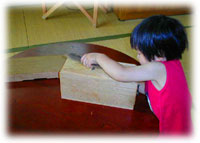
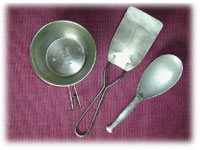

|
■Dear Eggs
一緒に暮らしはじめて半年。はじめて喧嘩したという若いふたりが、ぶらりと遊びにやってきた。仲裁なんかまっぴらだ、と思ったら、仲直りはもうすんでいるという。
「喧嘩のもとは枝豆。枝豆がいっぱいあったから、茹でて、半分を丼ものにしようと思ったの」
ふーん。たいていはどんなにたくさんあっても、茹でて、だらだら食べつづけ、気がついたらなくなっていたというのが、枝豆ってものだと思う。それを丼にしようと考える心意気、いいねえ。卵でとじて、塩こしょうしてごはんの上にのっけたそうだ。
「おいしくなかった、の？」
「枝豆と卵だけだもんなあ」
という彼のこのことばで、初喧嘩の道筋が読めるというもの。
この枝豆丼に足りなかったもの、それはたぶん「うまみ」だ。うまみというより、ほんとうはだしとかスープの括りになるのかもしれない。が、私の気持ちのなかでは、食材の力をひきだし、支えるものは「うまみ」なんである。台所で私は、いつもこの「うまみ」を追いかけているような気がする。追いつかなければうまくないが、追いかけ過ぎてもうまくないのが「うまみ」。
彼女が、突然、思い出したように言った。
「最後にバターを落としたのよ」
こういう場合のバターは「風味」という位置づけになる。
あなたならどう作る？、と尋ねられて、そうねえ、と考える。
とき卵にかつお節を削って入れて、砂糖と醤油で味つけをした炒り卵風。枝豆を少量のスープで煮、そこに卵を流しこむ洋風（そして最後にバターをのせる）。どちらも卵に火を通しすぎないように気をつけて、仕上げとして和風の方には刻みのりを、洋風の方にはあさつき（または小ねぎ）を小口切りにしたのをのせてみようか。うん、おいしそうだ。
枝豆に気圧されて、このたびは脇役にまわったが、卵の力は偉大だ。なんとも不思議な、そして頼りになる食材だ。ほんとうは食材などと言ってはいけないのだろう。こっちへ行けばひよこです、あっちにいけば食材ですという道の二又で、いきなり食材コースに流されてしまう卵。もちろんひよこにはひよこの、雌鳥雄鳥にはまたそれぞれの悲哀があるわけだけれども、卵の段階で食材コースというのは、ため息ものだ。せめて大事に、愛おしんで食さなければ。というようなことをときどき考えるが、ふだんはほとんどぼんやりしていて、ぼんやりついでに卵を割ったりするものだからつい先日もごみの山にむかって黄身と卵白の方を捨て、殻持ったまま「あら、」。
卵かけごはんはどうだ。溶き卵に好みの量の醤油を混ぜてごはんにかけるだけなのに、あのおいしさといったら。生卵のうまみ、あれはいったいなんだろうか。火を通して丼ものなんかにするというと、なぜかうまみを足してやらなければならなくなる。それは、卵の意地かもしれないなあ。
この夏、とびきりおいしい「開化丼」を食べた。
「開化丼って、なあに？」
「親子丼の豚肉版だよ」
木の葉丼とか、他人丼（卵と鶏は親子だが、卵と豚はアカの他人だからね）と呼ぶこともある丼ものだ。開化丼というのは、実においしそうで、なおかつ風情のある名ではないか。
さて、キャンプに出かけた山のなかで、私は「開化丼」を食べた。友だちのなかで、5本の指のなかに入る料理上手、シュウちゃんがつくってくれた。指5本のうちでも、シュウちゃんは黒一点。黒くてもこのひとの料理は、「こういうものをこしらえてみたいから、材料は何々をそろえておくように」と言っていなくなり、材料がそろったところでおもむろに腕をふるい、ふるったらふるいっぱなしでまたいなくなるという、殿様料理人ではない。材料も自分で買い出しに行き、それも立派に節約を心がけて買い、台所に立つ。「かたつむりのムニエル・ガジガジソース、どこだか風」なんていうようなものでなく、サバのうどん、コロッケ、豚汁、なんていうものをこしらえた上に、前菜や箸休め、即席の漬物というあたりにまで、心をくばる。「週末はお父さんのつくったものを食べる」がいつとはなしに定着し、それを4人の子どもたちも楽しみにしているそうだ。こういう旦那をもったひとの幸福についてはうらやまし過ぎて、あんまり考えたくないけれど、友だちにもっただけでもありがたいと言わなければならない。
星のまたたきのもと、シュウちゃんはつぎつぎに開化丼をつくっていった。台所に立つ者ならば一度はあこがれたことのある、ほら、あの親子鍋を取り出して。見ると、小さな煙突のついた蓋まである。総勢13人の口が待っているなか、歳の小さい順からひとり分ずつこしらえていく。私はそっと手招きして長女を呼ぶ。
「ずっとそばにはりついて助手をしながら、開化丼の秘密をみつけてよ」
星々が天高く移動したころ、そろそろほろ酔いを過ぎようとする私のもとに「開化丼」が置かれた。とろけるようでありながらふんわりとした卵。みつばの香り。あ、かまぼこ。しあわせ。13個の開化丼の誕生に立ち会った娘が、報告にきた。
「私が卵を溶いたんだよ。カシャッと1まぜか2まぜするだけなの」
「それが秘密……？」
「うん。卵のうまみをこわさないようにするんだって」

■開化丼のつくり方（1人分）
豚バラ肉（スライス）………50g（スライス2枚）
卵…………………………………1個
玉ねぎ……………………………4分の1個
赤かまぼこ………………………適宜（かまぼこは、なるとでもOK）
きざみのり………………………適宜
みつば……………………………適宜
つゆ……………………………80cc
（4人分なら、だし250cc、しょうゆ40cc、砂糖大さじ2杯、みりん少々を合わせて、320ccになるようにつくる。市販のめんつゆを使う場合は、天つゆと同じ割合にうすめる）
・親子鍋（なければ小さいフライパン）に80ccのつゆを沸騰させ、3cmはばに切った豚肉と、薄いくし切りにした玉ねぎを入れる。
・肉を煮過ぎるとかたくなるので、少し赤みがあるうちに具を鍋の中央にまとめ、溶き卵とせん切りのかまぼこを入れる。
・ふた（なければアルミ箔）をして1〜2分煮る。この間に丼にごはんをよそい、きざみのりをふりかけておく。
・くずれないように細心の注意をはらい、ごはんにかけて、みつばをのせて一丁上がり。
※「つゆだく」が好みのひとは、つゆを多めに。といっても100ccくらいまで。
※卵を溶き過ぎないこと。箸で刺す程度に。
※紅しょうが、おしんこを忘れずに。
「味噌汁は、なめこがよく合います。これは僕の好みかな」
レシピ／石原秀市郎

|